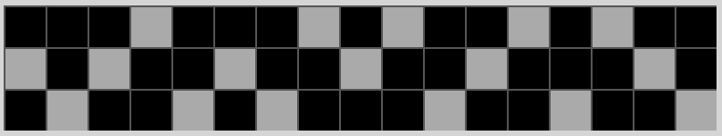
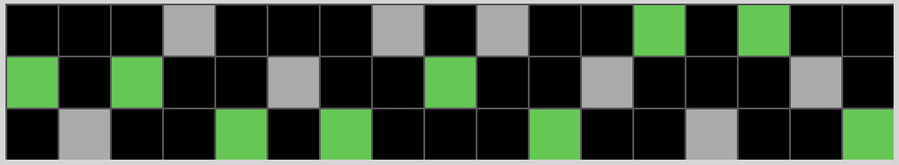

Instructions
Imagine that you are a student with a test tomorrow, and as part of your homework, you have to solve different patterns.
The first question of your homework was easy, the problem was:
7 --> 143 --> 65 --> ?
You recognize the pattern: you multiply the number by 2. So, the answer must be 10.
But the next section was not as easy. Instead of transforming numbers, you have to transform grids. This is the problem:

Okay, this is more difficult, but after a bit of thinking, you see the pattern. You have to place a dark blue square in the missing corner of the light-blue square shapes, making them into a square. So, this is the answer you get:

You have a test on these patterns tomorrow, and you remember that you will not be shown the first two input-output grids. Just seeing the last grid, you have to create the correct grid! How can you do this??
The test is open-note, so you can write down the pattern. For the first problem (with the numbers), all you write down is that you multiply the first number by 2. For the second problem (with the grids), it isn't as easy. After thinking for a bit, you write down, "On the first grid, there are multiple 2x2 squares with 1 block missing. To get the right answer, you have to add a dark blue block in that missing corner of the square."
But there are a lot of patterns on the homework and test, so you break up the work with your friend. She will describe half of the patterns, and you will describe the other half. Before the test tomorrow, you will give eachother copies of your descriptions.
The next day, during the test, you give your friend your descriptions, and she gives you hers. On the first question, this is all you see:
Your friend's description for that problem says, "Starting at the very right and moving left, color every other gray pixel green". So, you do just that and create this output:
It's the right answer!
In this study, you will do the 2 things that the student did in this hypothetical:
- Describe a grid pattern in english so that your friend, who has not seen the task, can do well on the test. This is called being the speaker
- Create the correct answer on the test given only one grid and a description of the pattern from your friend. This is called being the
listener